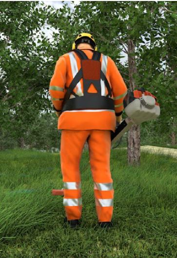
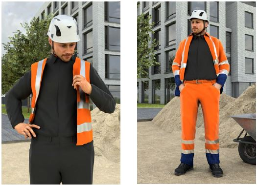
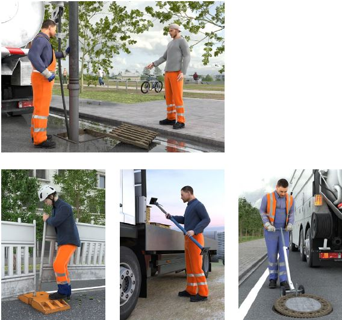
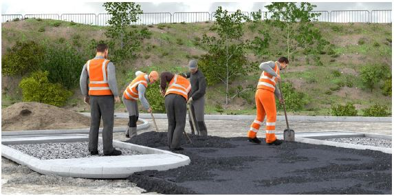

Die Warnwirkung der zum Einsatz gebrachten Warnkleidung ist bei den typischen Arbeitshaltungen zu gewährleisten. Beim Tragen von Arbeitsmitteln, wie Freischneider oder Laubblasgerät, sowie beim Transport von Gegenständen werden häufig Teile der Warnkleidung verdeckt, so dass die Erkennbarkeit des Trägers oder der Trägerin eingeschränkt ist.
In der Regel wird in solchen Fällen Warnkleidung der Klasse 3 erforderlich sein, um eine möglichst hohe Sicherheit für die Versicherten zu erreichen.
Das nicht bestimmungsgemäße Tragen von Warnkleidung, wie z. B. das offene Tragen einer Warnweste oder das Hochkrempeln von Ärmeln/Hosenbeinen, führt zur Verminderung der Warnwirkung. Darüber hinaus führt das offene Tragen der Warnkleidung zu Gefährdungen wie dem Hängenbleiben an Teilen von Maschinen, Fahrzeugen oder anderem aus der Umgebung.
Entsprechend der Herstellerinformation sind die Westen oder Jacken geschlossen zu tragen, da sonst die Erkennbarkeit eingeschränkt wird.
Insbesondere bei der Verwendung von mehrteiligen Kombinationen (Weste oder Jacke und Rundbundhose) ist zu beachten, dass die Warnkleidungsklasse beim Ablegen oder Verdecken von Kleidungsstücken reduziert wird und der notwendige Schutz damit nicht mehr vorhanden ist.

Abb. 26 Teile der Warnkleidung werden durch Arbeitsgerät verdeckt

Abb. 27 Offenes Tragen der Warnkleidung vermindert die Warnwirkung und erhöht die Gefährdung des Hängenbleibens

Abb. 28a–d Reduzierte Schutzwirkung bei nicht bestimmungsgemäßer Anwendung

Abb. 29 Reduzierte Schutzwirkung bei Nichttragen von Warnkleidung und unvollständiger Warnkleidung